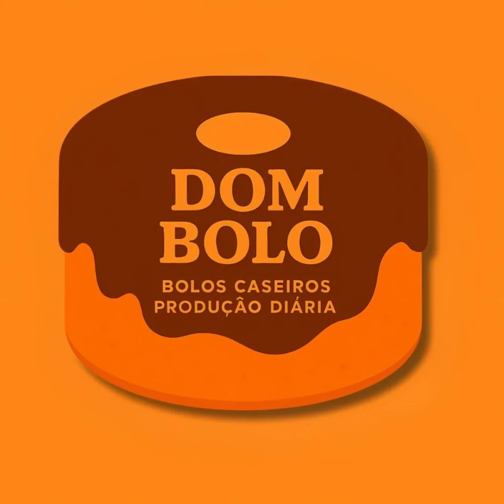
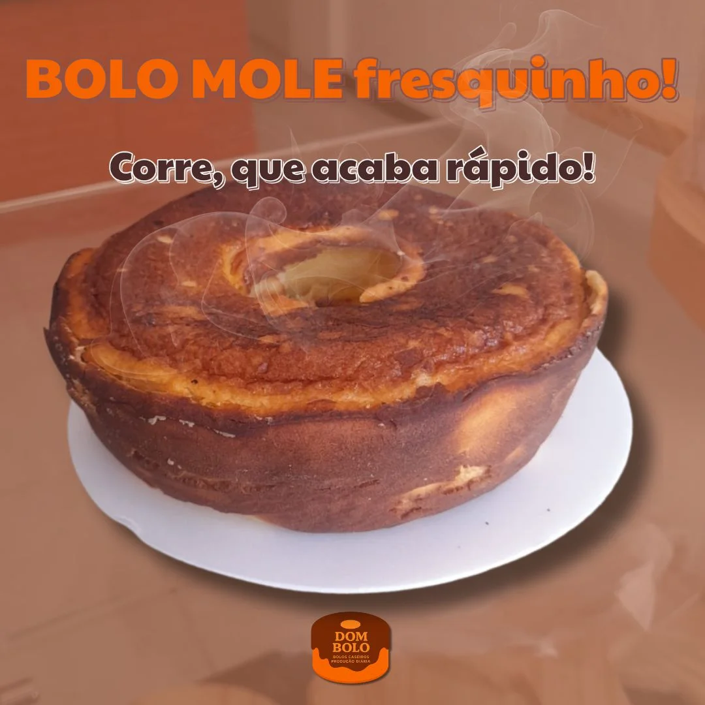

🤗 Sabor que abraça.
👨🍳 Produção Diária de bolos caseiros, feitos com afeto para o seu café da tarde.
Aquele bolo fofinho de vó: milho, cenoura com chocolate, fubá e laranja. Produzidos todos os dias fresquinhos para você.
Para quem ama cobertura! Massa leve artesanal com muita, mas muita cobertura de brigadeiro, leite ninho ou doce de leite.

Delícias em porções individuais perfeitas para adoçar a sua rotina ou presentear alguém especial no meio do expediente.
A Dom Bolo nasceu da vontade de resgatar memórias afetivas através do paladar. Nossa produção é inteiramente artesanal e diária: quebramos os ovos, ralamos a cenoura e batemos a massa todos os dias pela manhã para garantir que seu bolo chegue morno e cheiroso na sua mesa. Sem conservantes, sem misturas prontas, apenas confeitaria de verdade.